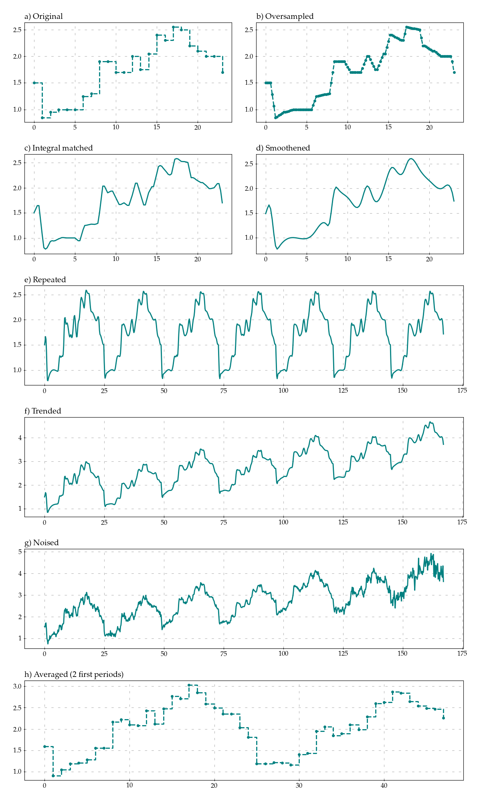

Welcome to Traffic Weaver’s documentation!
Contents:
Create semi-synthetic time-series based on averaged data.
Description
General scope of Traffic Weaver is to read averaged time series and to create semi-synthetic signal with finner granularity that after averaging matches the original signal provided. Following tools are applied to recreate the signal.
Oversampling with a given strategy
Stretched to match the integral of the original time series
Smoothing
Repeating
Applying trend
Adding noise
Below figure illustrates the processing example. Based on provided original averaged time series (a), signal is n-times oversampled with predefined strategy how to approximate intermediate points (b). Next, it is stretched to match integral of the original function (c). Further, it can be smoothened with spline function (d). Signal can be repeated several times (e) to apply certain long-term trend (f). Finally, noise can be introduced to signal (g). (h) presents averaged two periods of created signal to show that they match the original signal.
{kind=link}
Getting Started
Installation
Install package with pip.
pip install traffic_weaver
Minimum processing example
from traffic_weaver import Weaver
from traffic_weaver.datasets import load_mobile_video
from traffic_weaver.utils import add_one_sample
import matplotlib.pyplot as plt
# load exemplary dataset
x, y = load_mobile_video()
# add one sample to the end as file contains averaged values for time intervals
x, y = add_one_sample(x, y, make_periodic=True)
wv = Weaver(x, y)
# plot original time series
fig, axes = plt.subplots()
axes.plot(*wv.get(), drawstyle='steps-post')
plt.show()
# process time series
wv.repeat(4).trend(
lambda x: 0.5 * x).noise(snr=60)
# plot modified time series
fig, axes = plt.subplots()
axes.plot(*wv.get())
plt.show()
# get time series processed data
x, y = wv.get()
# or get them as a spline function to sample any arbitrary point
f = wv.to_function()
# get value at 0.5
yi = f(0.5)